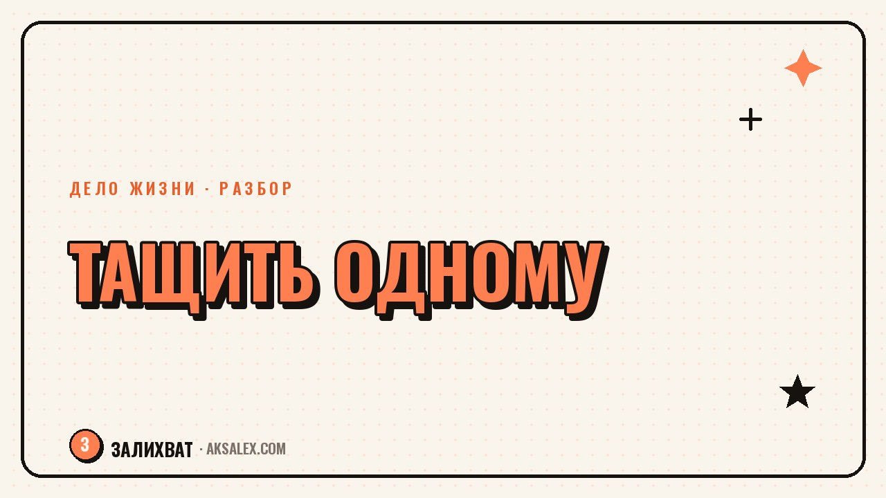

Как перестать быть единственным, кто тащит своё дело

Есть особый вид усталости, который не лечится отпуском: когда ты знаешь, что если заболеешь или пропадёшь на неделю, дело остановится. Клиенты не получат ответ, заказы не соберутся, контент не выйдет. Ты становишься не хозяином дела, а его единственной деталью, без которой всё встанет. Это не признак того, что ты плохо организован - часто наоборот, именно хорошая работа одного человека и приводит к такой зависимости. Разберём, как из неё выйти, не разваливая то, что уже построено.
Почему так получается именно с тобой
Чаще всего это не чья-то ошибка, а естественный путь маленького дела. На старте один человек обязан делать всё - иначе дело не появится. Проблема в том, что эта схема со временем не меняется сама: привычка 'я сделаю быстрее и лучше' укореняется, а передать задачу становится страшно, потому что результат может оказаться не таким, как ты сделал бы сам.
Есть и вторая причина, менее очевидная: роль 'того самого человека, без которого ничего не работает' даёт чувство незаменимости, а это приятное чувство. Даже когда оно изматывает, расстаться с ним бывает сложнее, чем кажется - потому что вместе с нагрузкой уходит и ощущение собственной важности для дела. Стоит признать это честно, прежде чем начинать делегировать: иначе ты будешь саботировать передачу задач неосознанно.
Признаки, что ты уже перегружен ролью единственного
- Отпуск или больничный означают паузу во всём деле, а не только твою личную паузу
- Ты не можешь вспомнить, когда последний раз кто-то взял на себя задачу без твоего контроля на каждом шаге
- Мысль 'доверить кому-то' вызывает не облегчение, а тревогу и желание всё перепроверить
С чего начать делегирование, если раньше не пробовал
Не нужно сразу передавать самую важную часть дела - это закономерно вызовет тревогу и скорее всего закончится тем, что ты всё равно всё переделаешь сам. Начни с задачи, которая отнимает время, но не требует твоей уникальной экспертизы: ответы на типовые вопросы, оформление документов, публикация готового контента.
Пошаговый план первой передачи задачи
- Выбери одну повторяющуюся задачу низкого риска - ошибка в ней не разрушит дело
- Опиши её письменно: что нужно сделать, какой результат считается хорошим
- Найди человека или инструмент (включая нейросеть для рутинных текстовых задач) и дай чёткую инструкцию
- Проверь результат первые несколько раз, но не переделывай молча - обсуди, что исправить
- Постепенно сократи проверку, когда качество стало стабильным
Передать задачу - не значит снять с себя ответственность за результат. Это значит перестать быть единственным исполнителем, оставаясь тем, кто отвечает за качество на выходе.
Куда можно передать нагрузку: сравнение вариантов
Вариантов разгрузки больше, чем одно решение 'найми сотрудника' - оно дорогое и не всегда нужное на первом этапе. Вот основные пути с учётом того, что подходит небольшому делу.
| Вариант | Подходит для | Главное ограничение |
|---|---|---|
| Фрилансер на разовую задачу | Разовые или редкие задачи (дизайн, тексты) | Нужно время на поиск и объяснение задачи |
| Постоянный помощник на части процессов | Повторяющаяся рутина (ответы, учёт, публикации) | Требует бюджета и обучения |
| Нейросеть для текстовых и расчётных задач | Черновики, ответы на типовые вопросы, сводки | Нужна проверка результата, не отдавай решения целиком |
| Партнёр с равной ответственностью | Стратегические решения, рост дела | Нужна чёткая договорённость о ролях |
Что мешает довериться другому человеку или инструменту
Главный внутренний барьер - страх, что без твоего контроля качество упадёт и клиенты это заметят. Отчасти это оправданный страх: первое время качество действительно может быть ниже, чем когда делаешь сам. Но если держаться за это вечно, дело так и останется ограниченным твоим личным временем и энергией, а это потолок, который не сдвинуть никаким усилием воли.
Второй барьер - неумение объяснить задачу так, чтобы её поняли без тебя рядом. Часто кажется, что проще сделать самому, чем десять минут писать инструкцию. Но эта инструкция - разовая инвестиция: написанная один раз, она экономит часы на каждой следующей передаче задачи, а не только на этой одной.
Как понять, что получилось снять зависимость от себя одного
Хороший признак - когда ты можешь уехать на неделю без интернета и дело не остановится, а клиенты не заметят разницы. Это не происходит сразу: обычно требуется несколько месяцев постепенной передачи задач и привычки не контролировать каждый шаг. Но именно эта свобода - настоящий признак того, что дело выросло из личного проекта в что-то более устойчивое, а ты наконец получил возможность отдыхать и болеть без чувства, что всё развалится.
Частые вопросы
Как понять, какую задачу делегировать первой?
Выбирай повторяющуюся задачу, которая отнимает много времени, но не требует твоей уникальной экспертизы, и ошибка в ней не критична для дела. Это снижает тревогу при первой передаче и даёт быстрый результат без риска.
Можно ли делегировать нейросети то, что обычно делаешь сам?
Да, для черновиков текстов, ответов на типовые вопросы и сводок данных нейросеть отлично подходит. Но решения, требующие понимания контекста клиента или твоей экспертизы, стоит оставить себе и только проверять черновик.
Почему страшно передавать задачи, даже когда физически не хватает времени?
Часто дело не в недоверии к человеку или инструменту, а в привычной роли незаменимого - она даёт ощущение собственной важности, с которым сложно расстаться, даже когда оно изматывает.
Сколько времени занимает выход из роли единственного исполнителя?
Обычно это не разовое действие, а процесс на несколько месяцев: сначала передаёшь одну задачу, проверяешь результат, постепенно снижаешь контроль и переходишь к следующей. Быстрого решения здесь нет.
Что делать, если после делегирования качество действительно упало?
Сначала разберись, в чём конкретно проблема - в инструкции, в выборе исполнителя или в отсутствии проверки. Чаще всего дело в нечёткой инструкции, а не в том, что задачу в принципе нельзя передать другому.
Раз тема оказалась полезной, вот что почитать следующим. Как делить роли и деньги в партнёрстве по своему делу и не поссориться с человеком, который тебе дорог.
Читать статью →а не вручную